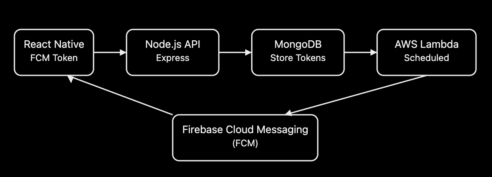
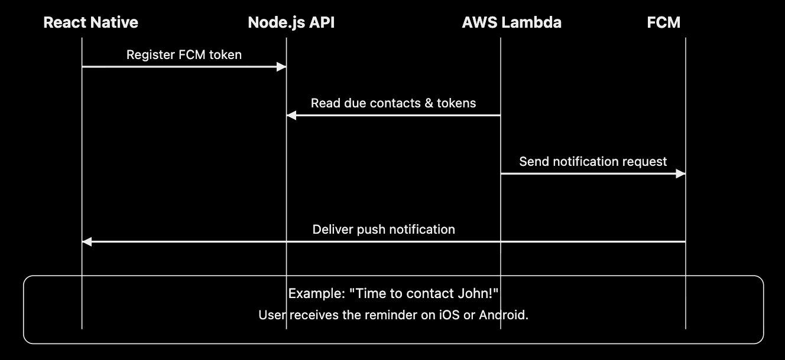

How Firebase Push Notifications work
1. Backend (Node.js / AWS Lambda)
Determines when a notification should be sent.
2. Firebase Cloud Messaging (FCM)
Routes the push notification to the intended device.
3. User's mobile device
Displays the notification on Android or iOS, subject to notification permissions and platform requirements.
Example of a push notification
Castanet
Time to contact John!
You have a contact who is due for a follow-up today.
What technologies are involved?
| Technology | Responsibility |
|---|---|
| React Native | Receives and handles notifications in the mobile app. |
| Firebase Cloud Messaging (FCM) | Delivers push messages to devices. |
| Node.js / AWS Lambda | Determines when to send notifications and prepares the message. |
| Firebase device token | Identifies the target app installation for message delivery. |
| APNs (iOS) | Apple's push notification service, which FCM uses to deliver notifications to iOS devices. |
How this relates to your Castanet project
Based on the Castanet notification workflow you shared earlier, the process works conceptually like this:
- AWS Lambda triggers the scheduled notification function.
- NotificationService.sendNotifications() checks which contacts need reminders.
- The backend retrieves registered device tokens.
- The notification service sends the message through FCM.
- The user's device receives and displays the notification.
Your existing code includes:
exports.schedule_notification = async (event, context, callback) => {
await LogService.log('Notification', 'Trigger', []);
await NotificationService.sendNotifications();
};
This function is the backend trigger for your scheduled notification workflow. The actual FCM message-sending logic is handled inside NotificationService or its related service.
Push notifications vs. local notifications
| Push notifications | Local notifications |
|---|---|
| Sent through a remote messaging service such as FCM. | Scheduled or created directly on the device. |
| Can be triggered by a backend server. | Can work without a backend sending each notification. |
| Requires network connectivity for new remote messages to arrive. | Can often be displayed without an internet connection once scheduled. |
| Example: a server sends a contact reminder. | Example: the app schedules a reminder locally for tomorrow. |
Important: Firebase Authentication and Firebase Cloud Messaging are different services. Authentication manages user identity and sign-in; FCM delivers push notifications.
For your full-stack developer profile, you can describe this experience as: “Implemented scheduled push notification workflows using AWS Lambda, Node.js, and Firebase Cloud Messaging (FCM) to deliver automated reminders to mobile application users.”
Since your Castanet stack is React Native + Node.js + AWS Lambda + Firebase Cloud Messaging (FCM), here's a practical end-to-end implementation showing how scheduled push notifications work.
Architecture

- React Native app gets an FCM device token.
- App sends the token to the Node.js API.
- API stores the token in MongoDB.
- AWS Lambda runs on a schedule.
- Lambda checks which users need reminders.
- Lambda sends notifications through FCM.
- React Native receives the notification.
1. React Native (Get FCM Token)
Install Firebase Messaging.
npm install @react-native-firebase/app
npm install @react-native-firebase/messaging
Request permission and get the token.
import messaging from '@react-native-firebase/messaging';
export async function registerDevice() {
await messaging().requestPermission();
const token = await messaging().getToken();
console.log(token);
return token;
}
Example output:
eW91ci1mY20tdG9rZW4...
2. Send Token to Node.js
const token = await registerDevice();
await fetch('https://api.trycastanet.com/device/register', {
method: 'POST',
headers: {
'Content-Type': 'application/json'
},
body: JSON.stringify({
token,
userEmail: 'user@example.com'
})
});
3. Node.js Express API
MongoDB Model
const mongoose = require('mongoose');
const DeviceSchema = new mongoose.Schema({
userEmail: String,
token: String,
platform: String,
createdAt: {
type: Date,
default: Date.now
}
});
module.exports = mongoose.model('Device', DeviceSchema);
Register Endpoint
const express = require('express');
const Device = require('./models/device');
const router = express.Router();
router.post('/device/register', async (req, res) => {
const { userEmail, token } = req.body;
await Device.findOneAndUpdate(
{ userEmail },
{ token },
{ upsert: true }
);
res.json({
success: true
});
});
module.exports = router;
Now every logged-in user has an FCM token stored.
4. AWS Lambda Scheduled Function
Your Serverless configuration looks similar to this.
functions:
schedule_notification:
handler: handler.schedule_notification
events:
- schedule: rate(5 minutes)
Lambda:
exports.schedule_notification = async () => {
await NotificationService.sendNotifications();
};
This matches the workflow you shared from Castanet.
5. Notification Service
Install Firebase Admin.
npm install firebase-admin
Initialize it.
const admin = require('firebase-admin');
admin.initializeApp({
credential: admin.credential.cert(serviceAccount)
});
Send notifications.
const Device = require('../models/device');
exports.sendNotifications = async () => {
const devices = await Device.find();
for (const device of devices) {
await admin.messaging().send({
token: device.token,
notification: {
title: 'Contact Reminder',
body: 'Time to contact one of your connections.'
},
data: {
type: 'contact-reminder'
}
});
}
};
This is the actual FCM delivery step.
6. Scheduled Contact Logic
In your Castanet project, the flow resembles this.
const dueContacts = await ContactRepo.getDueContacts(userEmail);
const overdueContacts = await ContactRepo.getOverdueContacts(userEmail);
if (dueContacts.length || overdueContacts.length) {
sendNotification();
}
Example:
| Contact | Status |
|---|---|
| John | Due Today |
| Sarah | Overdue |
| Mike | Not Due |
Only John and Sarah trigger notifications.
7. Receive Notifications in React Native
Foreground notifications.
import messaging from '@react-native-firebase/messaging';
messaging().onMessage(async remoteMessage => {
console.log(remoteMessage.notification.title);
});
Background notifications.
messaging().setBackgroundMessageHandler(async remoteMessage => {
console.log('Background', remoteMessage);
});
iOS Configuration
For iOS, FCM uses Apple Push Notification service (APNs) underneath.
Required setup:
- Enable Push Notifications capability in Xcode.
- Enable Background Modes → Remote notifications.
- Upload an APNs Authentication Key (.p8) to the Firebase Console.
Complete Notification Sequence

This implementation aligns closely with the Castanet architecture you described: React Native registers FCM tokens, Node.js/Express stores them in MongoDB, AWS Lambda (using the Serverless Framework) runs scheduled jobs, and Firebase Cloud Messaging delivers push notifications to both iOS (via APNs) and Android devices.